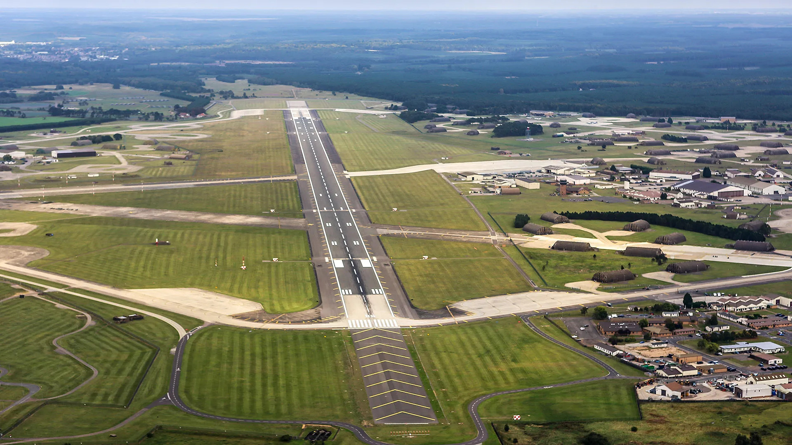

August, 1956.

The Lakenheath-Bentwaters incident was a series of radar and visual contacts with unidentified objects over USAF and RAF bases in eastern England on the night of August 13-14, 1956. It began at RAF Bentwaters in Suffolk, where radar operators tracked a target approaching from the sea at an apparent speed of several thousand miles per hour, alongside a group of slower targets that merged into a single large radar return. A USAF T-33 trainer sent to investigate reported seeing a light but was unable to make intercept. Later that night, another fast target crossed the base; as it passed overhead, ground personnel saw a rapidly moving white light, while a C-47 transport pilot reported a similar light passing beneath his aircraft. Bentwaters alerted RAF Lakenheath, where ground personnel saw luminous objects that appeared to change course sharply before moving off. According to Technical Sergeant Forrest Perkins, the radar watch supervisor at Lakenheath, an RAF Venom interceptor was scrambled, and its pilot reportedly tracked a target that maneuvered behind his aircraft and chased it for several minutes despite evasive action.
The case drew widespread attention primarily because of the US government-funded Condon Committee investigation (1966-1968), which otherwise concluded that UFO reports were misidentified natural phenomena or conventional aircraft. After Perkins wrote to the committee in 1968, investigator Gordon Thayer analyzed the logs and concluded that the probability of a conventional explanation was low, calling it one of the most puzzling radar-visual cases on record. Skeptic Philip Klass countered that the radar returns were caused by anomalous propagation—false echoes produced by atmospheric temperature inversions—and that visual sightings coincided with the peak of the annual Perseid meteor shower. In the late 1970s, former RAF radar controller Freddie Wimbledon came forward to support the tail-chase account, though he stated his team at RAF Neatishead, rather than American controllers, had directed the Venom. A civilian witness in the area also reported seeing a fast-moving white light and amber lights that night.
Later historical research complicated the narrative significantly. British researchers David Clarke, Andy Roberts, Martin Shough, and Jenny Randles tracked down the Venom aircrews from 23 Squadron who flew that night. The primary crew identified in later logs stated they were scrambled around two hours later than Wimbledon and Perkins claimed, saw no visual targets, experienced unimpressive radar contacts, and recalled no tail-chase, leading their squadron at the time to suggest a stray weather balloon. However, another Venom crew scrambled earlier that evening recalled hearing radio chatter matching Wimbledon's description, and their flight path may account for the civilian's sighting. Because no physical evidence or definitive visual confirmation of a structured craft was ever established, mainstream researchers and skeptics conclude the incident was most likely a complex combination of radar equipment anomalies caused by atmospheric conditions, misperceived meteors, and misremembered timelines.